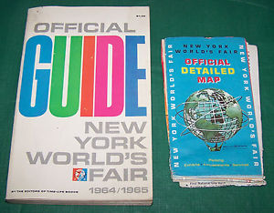

04-12: When Parts That Make Up Wholes Make Up Parts and Make Up Wholes
Organizing Principles
In the introduction of Designing the Editorial Experience, the authors Juliette Cezar and Sue Apfelbaum discuss: What is editorial design?
Editorial design is a discipline of communication design that specializes in publications of a serial, periodical nature, which are unified by a distinct editorial or creative vision, are produced at a predetermined frequency, and are made available by subscription and/or strategic distribution.
When we design an editorial experience, not only are we advising how it will be represented via what media, visual/interaction design, and page structure. We are also advising its identity, distribution time, and access model. Let’s take a look at a few more excerpts from the book.
Re: Identity (p.28)...
A reader leads through an issue, and upon receiving the next issue, refers to it as being alike, even though the content is 100 percent different. The aspect of design that makes this possible is identity...
re: Time (p.20)...
Time is everything for a periodical publication. Publishing frequency dictates how much time goes into designing and editing each issue and also reflects how readers will ultimately digest it...
Re: Access (p.9)...
Readers have not maintained their old habits, simply switching out their paper magazines and newspapers for iPads. Instead, everything form how they discover content, to how they sort, save, and consume it, has changed. Most of all, their expectations have changed...
These elements serve as important organizing principles when composing and designing the parts that make up the whole of an editorial experience.
Examples: Articles in Parts (and Wholes)
Wholes made into parts...
- A God in Every Stone by Atavist Books
- Paul Ford: What is Code by Bloomberg
- Luge by the New York Times
- The Panama Papers by Sueddeutsche Zeitung
- Lines by The Cafe Society
- Interactive Wall at the Cleveland Art Museum
Parts distributed over time...
- The Mastermind by The Atavist Magazine
- Snapchat Stories
- @MayorEmanuel Twitter account by Dan Sinker
- Quartz app
Conditional forms of access...
- The California Sunday Magazine
- ‘The Prophet’ paywall by Esquire
- Her Long Black Hair by Janet Cardiff
- The Silent History app
Workshop: Wireframing an Editorial Experience
During 2014 Sochi Olympics, the New York Times created a Sochi games website with features on news, results, and interactives.
A. Wireframe an editorial experience that rethinks this:
B. You will work in groups, and each group will cover a section:
- “How to See the Fair” pp.4–33
- “International Area” pp.118–171
- “Federal and State Area” pp.172–195
- “Transportation Area” pp.196–220
- “Lake and Museum Area” pp.224–245
C. Break your content into parts, and distribute over time or space.
D. Create wireframes, and be ready to present them at the end of the class.
Resource: Mockups & Flowcharts
- Wireframe Flows – Atavist homepage (atavist.com)
- A shorthand for designing UI flows
- Framer prototyping tool
- HTML/CSS prototype